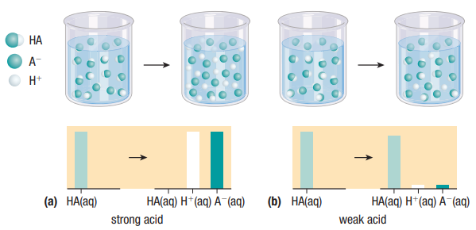

Strong and Weak Acids and Bases and Explore Applications of Acids
Callout
Strong and Weak Acids
STRONG ACID - an acid that ionizes ALMOST 100% in water, producing hydrogen ions.
WEAK ACID - an acid that only PARTLY ionizes in water, producing hydrogen ions.

(a) A strong acid is almost completely ionized in water, resulting in a relatively high concentration of H+(aq) and A-(aq) ions and much lower concentrations of HA(aq) molecules.
(b) A weak acid consists of a relatively high concentration of non-ionized HA(aq) molecules and much lower concentrations of H+(aq) and A-(aq) ions.
Callout
4.png)
There is an important connection between the strength of an acid and the strength of its conjugate base. The stronger an acid, the weaker its conjugate base, and conversely, the weaker an acid, the stronger the conjugate base.
2.png)
All the hydroxides of the Group 1 elements — LiOH, NaOH, KOH, RbOH, and CsOH — are strong bases. The Group 2 (alkaline earth) hydroxides — Ca(OH)2, Ba(OH)2, and Sr(OH)2 — are also strong bases.
For the Group 2 bases, 2 mol of hydroxide ions are produced for every 1 mol of metal hydroxide dissolved:
Ca(OH)2(aq) → Ca2+(aq) + 2OH-(aq)
WEAK BASE – a base that only PARTIALLY REACTS with water to produce hydroxide ions. There are many bases that, like ammonia, produce hydroxide ions by reacting with water. In most of these bases, the lone pair of electrons is located on a nitrogen atom.
Base Ionization Constant (Kb)
1.png)
- also called the base dissociation constant
Relationship between Kw, Ka, and Kb 1.png)
1.png)
pH - the negative logarithm of the concentration of HYDROGEN ions in an aqueous solution
pOH - the negative logarithm of the concentration of HYDROXIDE ions in an aqueous solution
.png)
Callout
pH and pOH are related by the equation
pH + pOH = 14.
Sulfuric Acid
.png)
Sulfuric acid must be handled carefully, however. It can be a very dangerous acid, reacting violently with water to RELEASE a lot of thermal energy.
Callout
This indicates that the reaction is EXOTHERMIC.
Sulfuric Acid
- Spills of sulfuric acid on land can cause significant local environmental damage.
- Spills into waterways could be even more serious, contaminating aquatic ecosystems and possibly threatening drinking water supplies for people in the area.
1.png)
.png)
Equilibrium in an Industrial Process
Industrial chemists use Le Châtelier’s principle to predict how changing the conditions in the system will affect the equilibrium. According to Le Châtelier’s principle, the production of sulfur trioxide is predicted to increase when:
-
the pressure is high
-
there is excess reactant, or
-
the temperature is low.
APPLICATION
.png)
A chemical company wants to build a sulfuric acid production plant in your community. The chosen site is near a river that is the municipal water source. The company promises many new jobs that will boost the local economy. Some members of the community are delighted at the prospect of additional jobs. Others have concerns about the safety and environmental implications of the plant.
The company has been given approval to proceed with construction and operation on the condition that they follow strict rules regarding the safe transportation of raw materials and products, the disposal of wastes, and the health and safety of workers within the plant.